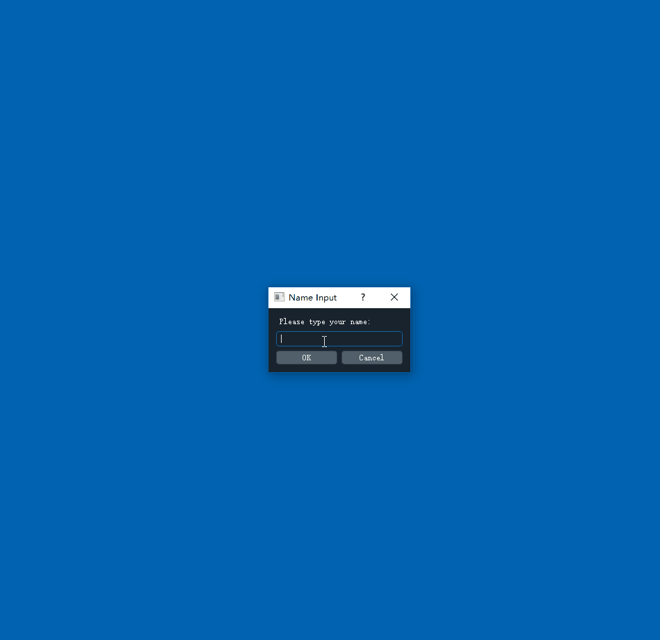

Collect Data
Calibrate
Use Tobii's software to do the calibration. I did try to write my own calibration but then I found Tobii's is great which even had a game to play (Now I can't find the game, seems like it is deleted). After the calibration, you can open MicEye by
python miceye.py
Start collection
Place all the images in a same folder, then change the "image folder" option in config.json.
The data collection begin with typing the name down. And a message is shown to the volunteers to tell them how the experiment is setted up. You can modify the message at main.py.

Simply look
Just press the "Enter" for the next image. Gaze will be recorded.
Type to label
This is for quantification/classification. For example, in knee X-Ray image, there is a quantification criteria named KL-Grade, range from 0 to 4, 0 means healthy and 4 is very ill. If do cat/dog classification, type 0 for cat and 1 for dog. It's on you.

Draw bounding boxes
You can add bounding boxes by click "Add Bounding Boxes", then draw some boxes.

Laser eye mode
It is a keypoint label, look at where you want label, and press "L" key.
Save data
The gaze data is saved automatically after the experiment is finished.
In default setting, the data will be saved to logs/name year-month-day-hour-minute.csv.
In the save file include multiple lines, each line include information seperated by semicolon, such as:
some-dir/9063823L.png;1;[[206, 412], [206, 412], [205, 411], ..., [105, 501]];[];(-1, -1)
It is orgnized by
image-location;class-label;[gaze-loc-1,gaze-loc-2,...,gaze-loc-n];[bbox_x1,bbox_y1,bbox_x2,bbox_y2];keypoint-loc
in which all the coordenate is the image coordinate system. For example, upper left of the image is [0,0].
Config
We also provide config.json , so you can modify it.
{
"image folder": "image folder",
"save log to": "./logs",
"random display order": true,
"image height": 900,
"loading wait": 3,
"font": "Helvetica",
"dark mode": true,
"insta review": false,
"guide mode": true
}
Other options should be pretty straight forward. Let me explain "insta review" and "guide mode".
-
"insta review" let you review the visualization of gaze when viewing the last image.
-
"guide mode" display the annotation (if any) then display the image, this mode is for teaching which we are still working on.